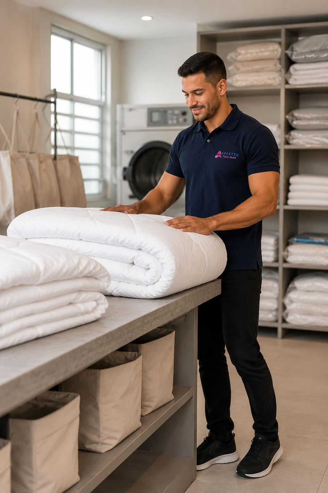

Retirada e entrega
Você não precisa carregar peças grandes.
A Affetto lava edredons, cobertores, mantas, lençóis e peças volumosas com processo profissional, produtos biodegradáveis e coleta em Itapema, Balneário Camboriú, Itajaí e Porto Belo.

Edredons, cobertores e mantas são peças grandes, difíceis de lavar em máquinas comuns e exigem secagem adequada para evitar cheiro de umidade.
A coleta facilita a rotina e evita transportar peças volumosas.
Informe cidade, bairro e peças.
Conforme rota, agenda e disponibilidade.
Processo profissional com produtos biodegradáveis.
Prazo médio de 3 dias úteis, conforme volume e agenda.
Edredons, cobertores, mantas, colchas, cobre-leitos, lençóis, fronhas, travesseiros conforme avaliação e roupas de cama em geral.
Você não precisa carregar peças grandes.
Ajuda a reduzir risco de cheiro de umidade.
Ideal antes de usar, depois do inverno ou antes de guardar novamente.
Na mesma retirada, você pode enviar cortinas, tapetes, mantas, cobertores, lençóis, fronhas, travesseiros e roupas de inverno.
Consulte a disponibilidade de retirada e entrega para sua cidade e bairro.
Praça principal, com atendimento conforme rota e disponibilidade.
Atendimento para apartamentos, casas e imóveis de temporada.
Consulte disponibilidade de rota para seu bairro.
Coleta e entrega conforme agenda regional.
O atendimento depende de rota, agenda e disponibilidade para cada região.
Respostas diretas para seguir com orçamento pelo WhatsApp.
Sim, conforme avaliação e disponibilidade operacional.
Sim, conforme rota e disponibilidade.
O prazo médio é de 3 dias úteis, podendo variar conforme volume, peça e agenda.
Sim. A coleta pode incluir outras roupas de cama.
Informe cidade, bairro, quantidade de peças e tamanhos aproximados pelo WhatsApp.
Fale com a Affetto pelo WhatsApp, informe cidade, bairro e peças.